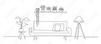

Sofas constitute one of the most diverse product groups, with designs that are meant to be comfortable, beautiful, practical,
playful, formal or any imaginable combination of these.If you're looking for the different
types of sofa fabric, or upholstery, you can take a look at cotton, wool, polyester, nylon, acrylic, leather and suede.
A sofa normally stays in a usable condition for about 8-9 yearsOn an average rate, almost 780 people sit on a sofa during that time period.
Almost 1260 meals are eaten while sitting on a sofa during its lifetime.
A couch consists of a frame, springs, padding, and a covering. The frame is usually made of wood, but can also be made of steel,
plastic or laminated boards. Sofa padding is made from foam, down
, feathers, fabric or a combination thereof. Sofa coverings are usually made out of soft leather, corduroy or linen.
A sofa establishes the mood of your living area and serves as the focal point around which the rest of your home's
furnishings are arranged. Your style is reflected in the sofa's design and the items around it.
A sofa establishes the mood of your living area and serves as the focal point around which the rest of your home's furnishings
are arranged. Your style is reflected in the sofa's design and the items around it.We know that we need furniture for our
comfortable lives, for storage, sitting on and, for relaxation. Buying furniture without being planned, affects your decoration and
overwhelming the space. Choosing the right one for your home or office not only improves overall beauty but keeps your stress away as well.
Sofas in cotton or linen fabric, and
leather sofas are classic upholstery materials that are
worth investing .
Interior Design
Interior designers make indoor spaces
functional, safe, and beautiful.Selecting essential
and decorative items, such as colors, lighting, and materials.
Exterior Design

Exterior Interior design is a multifaceted profession that
includes conceptual development,space planning etc..
Exterior design gives you the classic look and wonderful
outdoor living furniture.